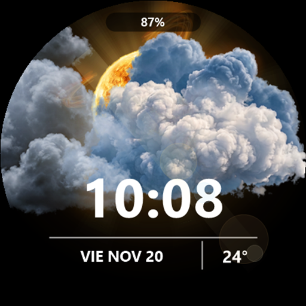
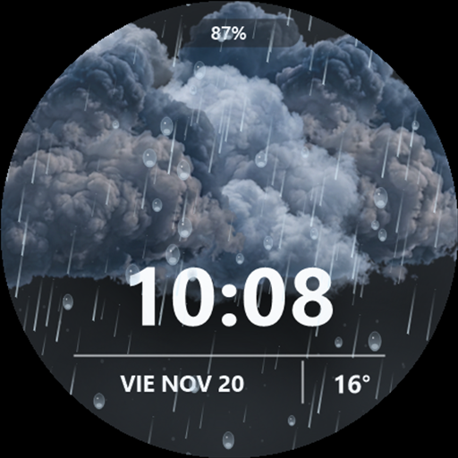
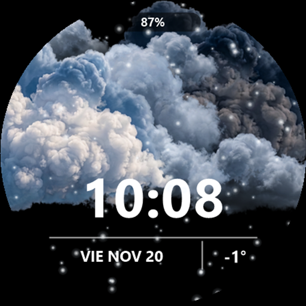

Weather Land
Carátula fotorrealista optimizada para pantallas AMOLED en Wear OS. Clima en vivo nativo del sistema con sol con destellos, 8 fases lunares reales, nubes volumétricas día/noche, tormentas con rayos, lluvia sobre el cristal, copos de nieve y niebla.
🧪 ¿Quieres probarla gratis en tu reloj Wear OS?
Inscríbete en la prueba cerrada en 2 pasos usando la misma cuenta de Google de tu reloj: primero únete al grupo de testers y luego activa la descarga en Google Play.
Características principales
☀️ Clima nativo + 8 Fases Lunares
Usa los proveedores nativos de Wear OS 5+ sin API keys externas. Nubes día/noche, prisma arcoíris en llovizna y las 8 fases reales de la luna.
🖤 Fondo Negro Puro AMOLED + AOD
Diseñada sobre #000000 para máximo contraste y ahorro OLED. En modo AOD apaga las animaciones y deja solo tus datos activos atenuados.
🔤 Fuentes Pixel, Nothing y Tamaños
Personaliza la hora con 4 fuentes (Pixel, Nothing Dot, Sport, Clásica), 3 tamaños hasta 1.75x y múltiples formatos de hora y fecha.
⚙️ 3 Complicaciones en el Bisel
Elige tus widgets favoritos (Calorías, Pasos, Batería, Ritmo Cardíaco, etc.) en los 3 arcos curvos personalizables del reloj.
Capturas de pantalla (Wear OS)






Política de Privacidad / Privacy Policy
App: Weather Land (com.soycamiloypunto.weatherland) · privacy.html
Weather Land es una carátula Wear OS desarrollada con Watch Face Format v2 (sin código ejecutable). No recopila, almacena ni comparte ningún dato personal ni ubicación. Toda la información del clima, hora, fecha y complicaciones se lee localmente desde Wear OS.
Contacto
soycamiloypunto · X: 𝕏 @criscamilotv · GitHub: github.com/soycamiloypunto/watchface_weater